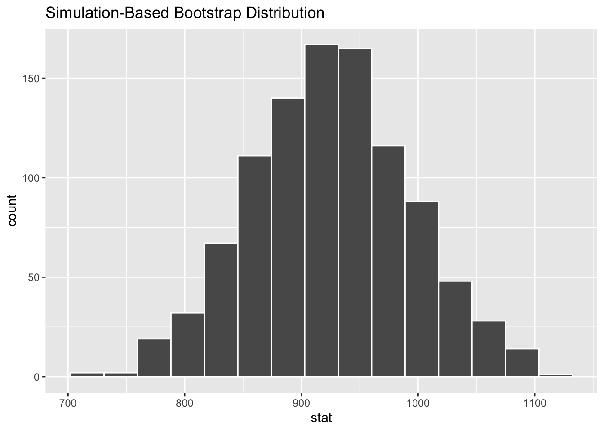

library(tidyverse)
library(infer)AE 07 – Meet the Lemurs
Application exercise
This week we’ll be working with data from the Duke Lemur Center, which houses over 200 lemurs across 14 species – the most diverse population of lemurs on Earth, outside their native Madagascar.
Lemurs are the most threatened group of mammals on the planet, and 95% of lemur species are at risk of extinction. Our mission is to learn everything we can about lemurs – because the more we learn, the better we can work to save them from extinction. They are endemic only to Madagascar, so it’s essentially a one-shot deal: once lemurs are gone from Madagascar, they are gone from the wild.
By studying the variables that most affect their health, reproduction, and social dynamics, the Duke Lemur Center learns how to most effectively focus their conservation efforts. And the more we learn about lemurs, the better we can educate the public around the world about just how amazing these animals are, why they need to be protected, and how each and every one of us can make a difference in their survival.
Source: TidyTuesday
Packages and Data
First let’s load the packages we’ll need.
And then load the data.
lemurs <- read_csv("lemurs.csv")Although our dataset contains 54 variables, we’ll only focus on the following 3:
| variable | type | description |
|---|---|---|
| taxon | char | Taxonomic code: in most cases, comprised of the first letter of the genus and the first three letters of the species; if taxonomic designation is a subspecies, comprised of the first letter of genus, species, and subspecies, and hybrids are indicated by the first three letters of the genus. |
| sex | char | M=male. F=Female. ND=Not determined |
| weight_g | double | Animal weight, in grams. Weights under 500g generally to nearest 0.1-1g; Weights >500g generally to the nearest 1-20g. |
Count the Lemurs
Our dataset includes three species of lemur, shown in the taxon variable using the following taxonomic codes:
| Taxon | Latin name | Common name |
|---|---|---|
| EMON | Eulemur mongoz | Mongoose lemur |
| ERUB | Eulemur rubriventer | Red-bellied lemur |
| LCAT | Lemur catta | Ring-tailed lemur |
lemurs |>
count(taxon)# A tibble: 3 × 2
taxon n
<chr> <int>
1 EMON 97
2 ERUB 23
3 LCAT 224Mean Lemur Weights
Let’s investigate the weight of these lemurs. Since we know that our dataset includes three different species of lemur, we might suspect that different species will be different sizes. So lets separate our visualization using the taxon variable:
lemurs |>
ggplot( aes(x=weight_g, fill = taxon) ) +
geom_boxplot()Ring-Tailed Lemurs
Let’s focus specifically on ring-tailed lemurs by using filter to create a new data set that only contains lemurs with taxon equal to “LCAT”.
lemurs_rt <- lemurs |>
filter( taxon == "LCAT" )Mean Weight
Now let’s calculuate the mean value of the variable weight_g. Notice that we are saving the result of this calculation in the variable called obs_stat_mean_rt so that we can refer to it later.
obs_stat_mean_rt <- lemurs_rt |>
specify(response = weight_g) |>
calculate(stat = "mean")
obs_stat_mean_rtResponse: weight_g (numeric)
# A tibble: 1 × 1
stat
<dbl>
1 924.Confidence Interval
Now let’s calculate, visualize, and interpret a 95% bootstrap confidence interval.
- Step 1: Construct a bootstrap distribution. Since there is a
generate()step, you should set a seed value before running. Add the line at the topset.seed(123)and changerepsvalue to 1000 to create your bootstrap confidence interval.
boot_dist_mean_rt <- lemurs_rt |>
specify(response = weight_g) |>
generate(reps = 1000 , type = "bootstrap") |>
calculate(stat = "mean")- Step 2: Visualize your sample distribution.
visualize(boot_dist_mean_rt)
- Step 3: Find the confidence interval precisely.
ci_95_mean_rt <- boot_dist_mean_rt |>
get_confidence_interval(
point_estimate = obs_stat_mean_rt,
level = 0.95
)
ci_95_mean_rt# A tibble: 1 × 2
lower_ci upper_ci
<dbl> <dbl>
1 795. 1060.- Step 4: Visualize the confidence interval, overlaying it on the bootstrap distribution.
visualize(boot_dist_mean_rt) +
shade_confidence_interval(endpoints = ci_95_mean_rt)Mongoose Lemurs
What happens if we look at a different species? Repeat the above analysis for Mongoose Lemurs.
Start by using filter to create a new data set that only contains Mongoose lemurs.
lemurs_m <- lemurs |>
filter( --- )Mean Weight
Calculate the mean value of the variable weight_g and save the result of this calculation in the variable called obs_stat_mean_m so that we can refer to it later.
obs_stat_mean_m <- lemurs_m |>
specify(response = weight_g) |>
calculate(stat = "mean")
obs_stat_mean_mConfidence Interval
Now we want to calculate, visualize, and interpret a 95% bootstrap confidence interval.
boot_dist_mean_m <- lemurs_m |>
specify(response = weight_g) |>
generate(reps = 10 , type = "bootstrap") |>
calculate(stat = "mean")- Visualize your sample distribution.
visualize(boot_dist_mean_m)- Find the confidence interval precisely.
ci_95_mean_m <- boot_dist_mean_m |>
get_confidence_interval(
point_estimate = obs_stat_mean_rt,
level = ---
)
ci_95_mean_m- Visualize the confidence interval, overlaying it on the bootstrap distribution.
visualize(boot_dist_mean_m) +
shade_confidence_interval(endpoints = ci_95_mean_m)